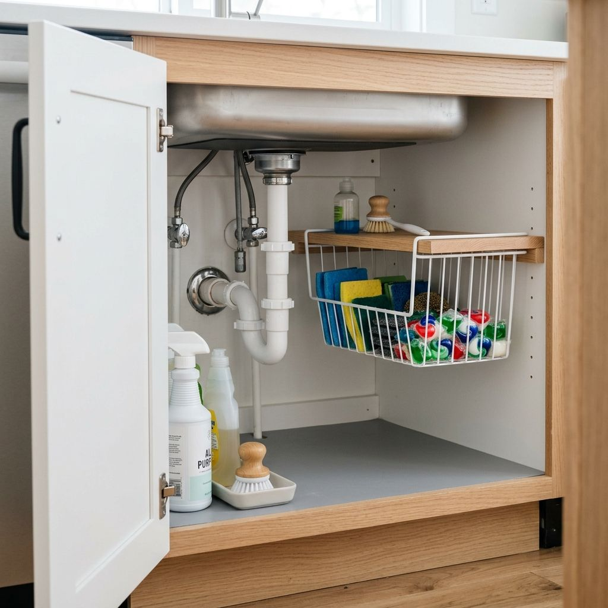
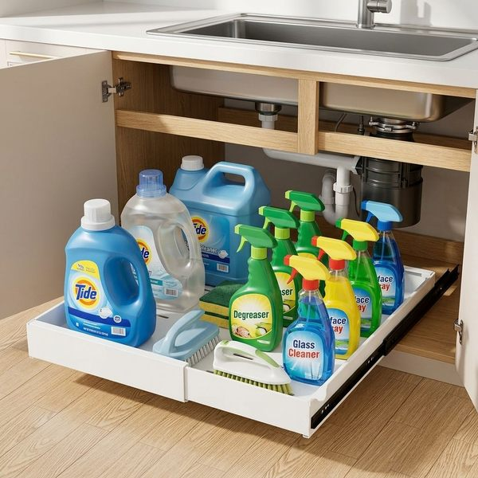

The cabinet under the kitchen sink is often the most disorganized spot in the entire home. Between awkward P-trap drain pipes, garbage disposals, and water lines, traditional shelves rarely fit properly, leaving bottles of cleaner and sponges scattered in a dark pile.
Fortunately, with a few purpose-built organizers, you can easily turn this awkward zone into a clean, double-tiered storage system. Here are the top 3 under-sink storage hacks designed specifically for small kitchens and rental apartments.
1. Use 2-Tier Sliding Drawers to Dodge Pipes
Because plumbing pipes drop down through the center of the cabinet, static bins force you to reach deep into dark corners. A 2-tier organizer with a sliding bottom basket lets you pull cleaning sprays, dishwasher pods, and trash bags directly toward you without knocking items over.

2-Tier Sliding Under-Sink Storage Organizer
Problem: Under-sink cabinets are notoriously tricky due to obstruction from plumbing pipes, garbage disposals, and tall spray bottles.
Solution: Designed with a narrow top tray and a smooth sliding bottom drawer, this 2-tier caddy fits around plumbing lines to organize cleaning supplies effortlessly.
- Navigates around plumbing pipes and disposal units
- Bottom drawer pulls out smoothly for easy access
- Waterproof corrosion-resistant frame
2. Utilize Half-Shelves with Slide-On Baskets
Many under-sink cabinets feature a small "half-shelf" at the top to avoid interfering with the plumbing pipes. Instead of leaving the empty air beneath it unused, slide a wire storage basket onto the shelf to create a suspended cubby for lightweight items like sponges, dishwasher pods, or trash bags.

AmonHouseware Under-Shelf Wire Storage Basket
Problem: Standard fixed under-sink half-shelves leave empty air space beneath them, wasting valuable cabinet volume.
Solution: Featuring padded slip-on arms that slide directly onto existing shelves, this wire basket adds a suspended lower level for sponges, trash bags, and dishwasher pods.
- Slides onto shelves up to 1.3" thick with zero tools or drilling
- Utilizes empty vertical air beneath cabinet shelves
- Durable steel wire construction holding up to 10 lbs
3. Reclaim Cabinet Space with Pull-Out Drawers
Don't waste deep lower cabinet space! Installing expandable sliding pull-out drawers lets you bring heavy cleaning refill bottles, buckets, and sponges out into the light without kneeling on the floor or drilling into rental wood.

PAKETA Expandable Sliding Cabinet Drawer Organizer
Problem: Reaching for heavy cleaning jugs or scrub brushes stored deep in lower cabinets requires kneeling down and digging through cluttered piles.
Solution: Fixed with heavy-duty Adhesive Nano Film, this expandable carbon steel shelf glides 100% forward without drilling into rental cabinets, bringing back-row items directly to you.
- Adhesive Nano Film installation — 100% renter friendly with zero screws
- Expandable width adjusts to fit custom deep cabinets
- Heavy-duty carbon steel frame glides forward smoothly